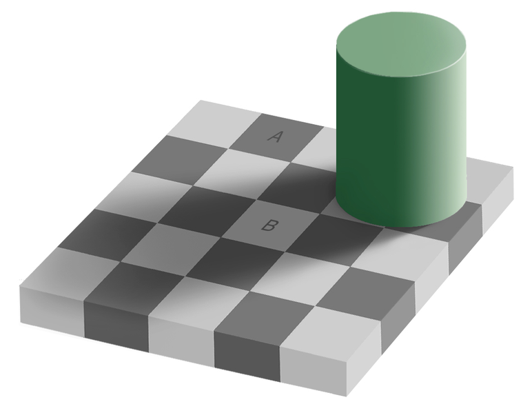

Assignment 10
Problems
-
(20 marks) Design a new object class that can be created, stored in, updated in, and/or deleted from the Object Server (formerly Quote Server) developed in this module. I recommend using either
quote.pyorhockey_player.pyas a base and modifying to suit your objects’ needs. You can find links to our final versions of the files at the bottom of the Summary page. You will also need to make two small additions toobject_server.pyto inform it of your new class’ existence. Place all the files necessary into a directory (or small hierarchy if you prefer) and zip it all up so you can submit a single file:a10p1.zip. -
(10 marks) Thresholding. Consider the two images of the Che Guevara below. The one on the left is an actual photograph. The one on the right is a manipulated image that has become iconic (even more so when it has a red background).
In image processing terms the one on the right is a thresholded version of the one on the left where values above some threshold have been set to white (255 in pillow terms) and values below that threshold have been set to black (0). Thresholding is a common operation that can be used to highlight or emphasize some parts of an image, e.g. a tumour in a medical image. The question is how to choose the threshold value. For this problem you will write three thresholding functions.
-
The first,
mean_threshold(im), will use the average pixel value in the image as the threshold. So it will set all pixels darker than the average pixel to be black, and all those brighter than average to be white. (You should write your own code to find the average pixel value.) -
The second,
median_threshold(im), will use the median pixel value in the image as the threshold. So it will set the lighter half of the pixels to be white and the darker half of the pixels to be black. (You should write your own code the find the median value.)(Note: If the pixel distribution is flat, or symmetric,
mean_thresholdandmedian_thresholdwill look the same, but if the distribution of pixel values is skewed, e.g. there are a lot more bright ones than dark ones, the results will be quite different.) -
The third,
threshold(im, value), thresholds the image using thevalueit is passed. Can you find a value that reproduces the image on the right above? (To make it easier to play around with this you can use the commandim.show()in your program. This will openimin the default program your operating system uses for images of that type. If you put this in a loop that prompts for the threshold value and then displays the thresholded image you can make this thresholding into an interactive process).
-
-
(10 marks) Improving edge measurement. In the notes we saw two masks that could be used to calculate vertical (
dx) and horizontal (dy) edge strengths. But what about edges in other orientations? For example a diagonal edge will have medium values for both horizontal and vertical measures even if it is a strong edge.a) To better measure edge strength we should combine the horizontal and vertical values to get a single measure of edge strength. The key to doing this is to realize that
dxanddymeasure components of edge strength. The problem of finding the ’true’ edge strength from them is the same as the problem of finding the magnitude of a vector in physics from its horizontal and vertical components, and the solution is the same too: the magnitude is the root of the sum of the squares of the component magnitudes , i.e. d = sqrt(dx^2^ + dy^2^).\
Write a function that is passed an image and returns an image whose pixel values are the edge strength at each location in the original image.
b) This edge strength measure is objective, but it may not be perceptually accurate. There is lots of evidence that the human visual system judges things relative to their surroundings. For a dramatic example consider the optical illusion below in which squares A and B have the same pixel value and yet do not look the same to us because we judge their brightness relative to their immediate surroundings.

(For more on this illusion see Checker shadow illusion in Wikipedia).
In the same way it might be that we “see” edge strength relative to the surrounding brightness, i.e. a +10 jump in a dark region may be more significant than a +10 jump in a bright region.
Write another function that divides the edge strength at each pixel location by the local average pixel value (where “local” means 3x3 pixel “neighbourhood”).
c) It’s also possible that we judge edge strength relative not to the local luminance or pixel value, but to the local variation in luminance. In topographic terms this explains why a 10 meter cliff on the prairie is more striking than a 10 m cliff in the mountains: there is more variation in elevation in the mountains than on the prairie so it stands out less in them than it does on the flat (nonvarying) prairie.
How can we measure variation mathematically? One common measure for the variation in a set of numbers is the root mean squared error. The name actually says it all though it takes a moment or two to parse it. It tells us to take the square root of the mean of the squares of the errors. The “errors” are the differences between each value and the average of all the values. Let’s look at an example:
The numbers: 4, 5, 9, 8, 5, 4, 12, 4, 4
The average: (4 + 5 + 9 + 8 + 5 + 4 + 11 + 4 + 4)/9 = 54/9 = 6
The “errors”: 4-6=-2, 5-6=-1, 9-6=3, 8-6=2, 5-6=-1, 4-6=-2, 11-6=5, 4-6=-2, 4-6=-2
The squares of the errors: 4, 1, 9, 4, 1, 4, 25, 4, 4.
The mean of the squared errors: (4+1+9+4+1+4+25+4+4)/9=6
The root of the mean of the squared errors: √6=2.4494897427831779
Write a function that divides the edge strength at each location by the local variation in the image, i.e. by the RMSE of the local 3x3 neighbourhood.
Logistics
- Use the following naming scheme for program files:
aassignment#pproblem#name.py. So Bob's solution to problem 2 on this assignment will be nameda10p2bob.py